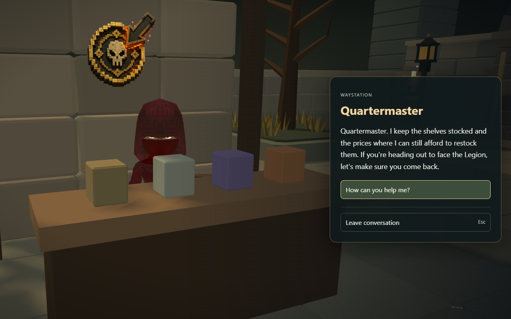
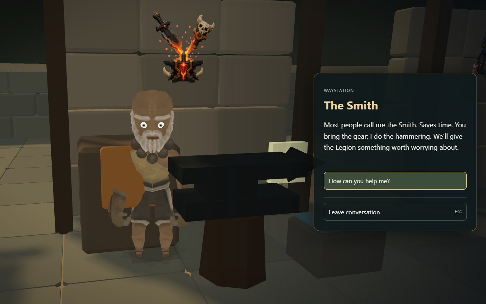
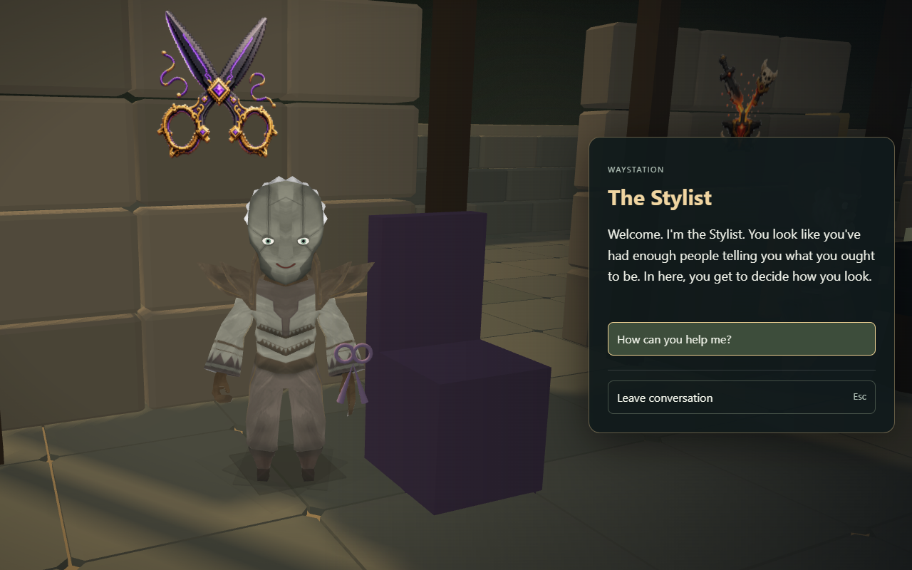
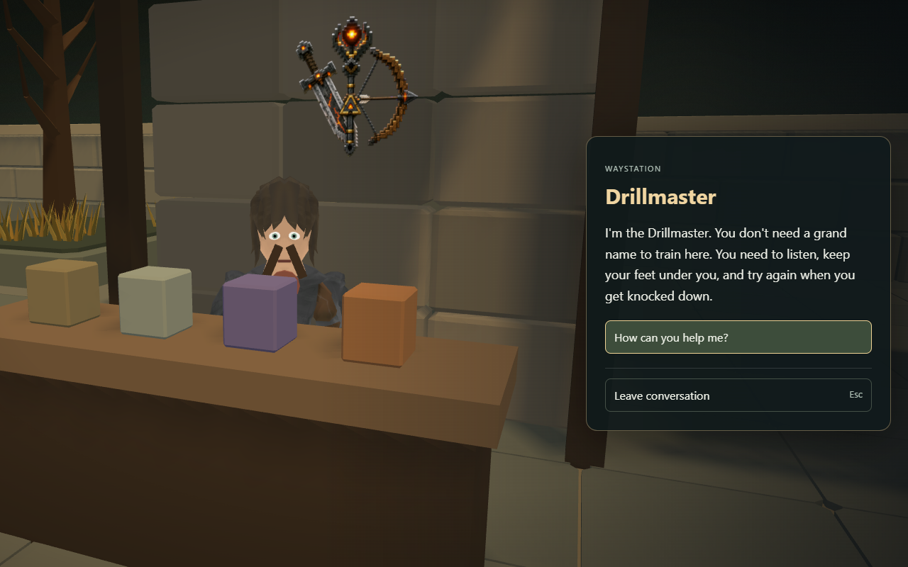
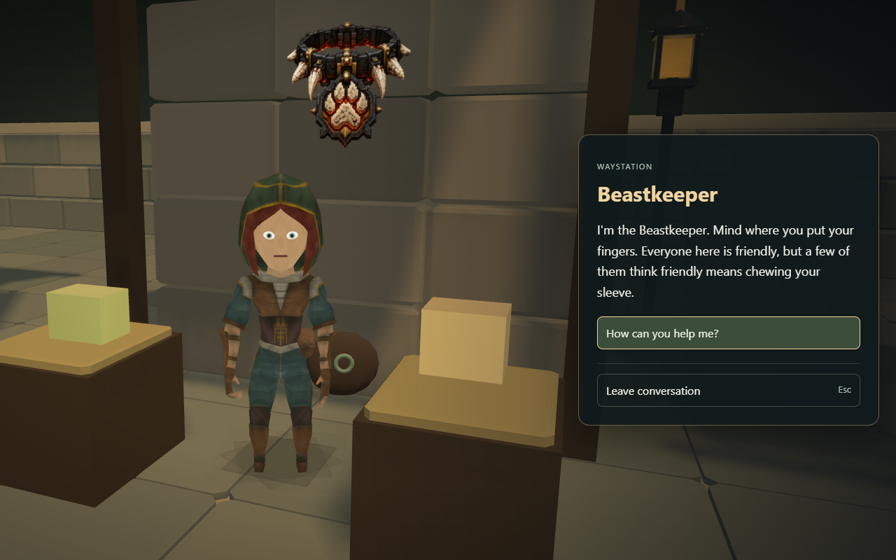
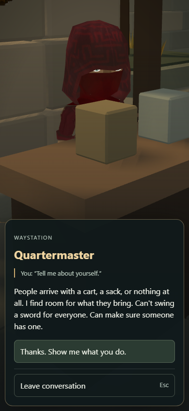

Build 1.989 · Actual in-game screenshots. Five hub keepers now have introductions, personal questions, optional victory dialogue and service access. Existing body models with fitted faces; the wider NPC art overhaul is still ahead.
Play Bladefall · Private Voice Studio





